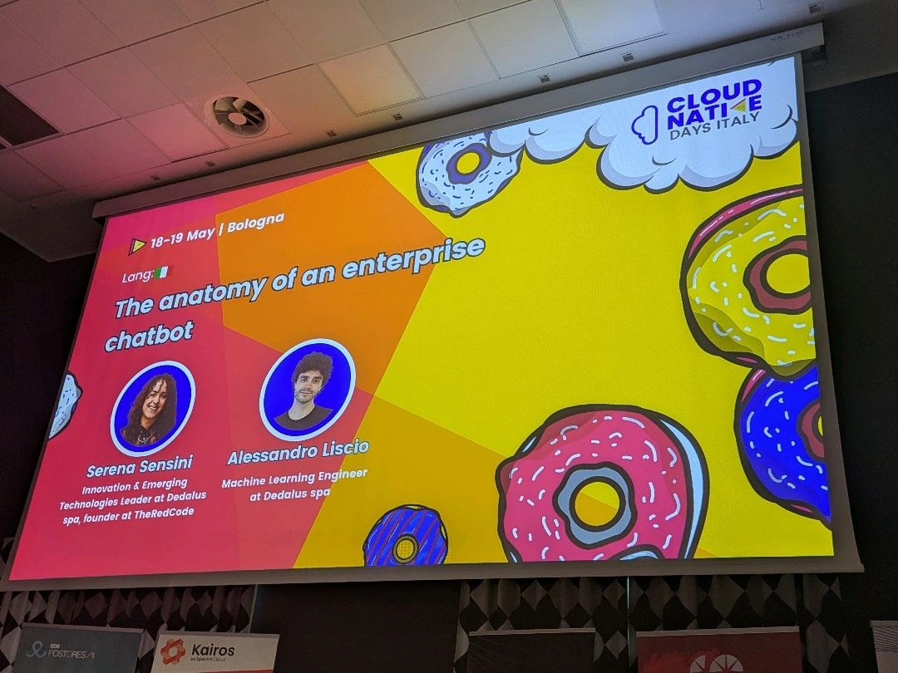
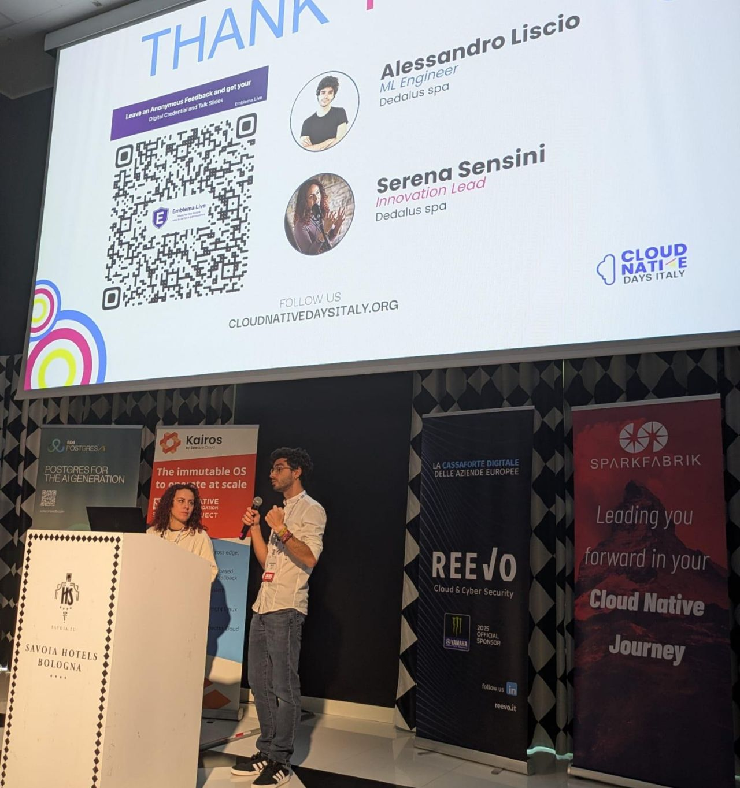

2026
Cloud-Native Days Italy, Bologna: speaker, "L'anatomia di un chatbot enterprise"
The anatomy of an enterprise chatbot, at Cloud-Native Days Italy
In May I spoke at Cloud-Native Days Italy in Bologna (18 and 19 May), a conference on open-source and cloud-native culture. With a colleague, the Innovation & Emerging Technologies Leader of Dedalus Italia, I gave the talk "L'anatomia di un chatbot enterprise", the anatomy of an enterprise chatbot.

The talk
We went through the challenges and the architectural choices behind a conversational knowledge-mining tool for an enterprise. In that setting innovation, security, governance and integration all have to hold at the same time.
The point

To create real value in an organisation, AI needs solid, modular foundations that are ready for what comes next. A chatbot that answers from a company's own documents depends on that ground: security, governance and integration have to be designed in, not added later.